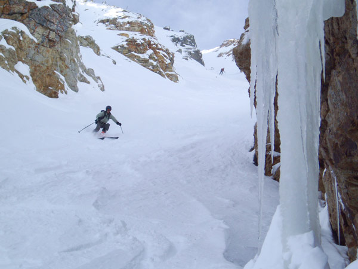

|
November 9
Cloud Chasing on Mt. Wire
5 AM I got the call. Powder Princess was blowing chunks to the proceline
throne. Without a backup buddy to ski with I decided to go back
to sleep. But my thighs kept me awake. They wanted to climb. They
didn't care if it was dark and rainy out. They wanted to pound out
some vert. So my legs dragged me out of bed and up to Red Butte,
where they took me up my favorite trail that goes straight from the
car
to the top of Mt. Wire. The smell of wet sage was a welcome scent,
overpowering the stale wafts of smog and ozone. Climbing the cold,
wet rungs of the radio tower to the top provided a 360 view of nothing
but
fog. Rain chased me back down to the valley.
November 7
Sniffer Ski At Deer Valley, Empire Area
Suprisingly, we weren't the only totally desparate skiers out there
who had decided to brave the early summer like heat. Star Child
was thrilled
to
finally get in some quality powder porpoiseing. Deer Valley is an
excellent
spot for
early
season
sniffer-skiing
as dogs are welcome and some
steep, N facing
lines are right in front of the parking lot. Watch out
for brown snow and bring some sun screen.
November 6
Chute schopping: Wolverine cirque and Tuscarora
We hiked up Grizzely Gulch, following the ridge along Patsy Marley,
The Cirque, up to Wolverine peak, with our heads glued to our
left shoulders, looking for the perfect chute. The Sickel seemed
long and tasty so
we hit that for
starters. After another line in the cirque, we worked
our way over towards Tuscarora were we skied a north facing chute,
then crossed
over a notch onto the east face, which was sun crusted to perfection.
We finished with a setting sun home run from 10,595 (Point Supreme?).

Foothill shreds Baldy Main Chute, Helmutt practices good skiing safety
above.
November 4
Baldy Main Chute
Deciding to ski main chute was easy as looking down
little chute was a real sphincter tightner. The low snowpack accentuated
the teeth of this run, and the crux was narrow and long enough
to ensure more side slipping than I care to practice before breakfast.
Main Chute was soft and powdery, allowing smooth,
round turns. Tombstone at the bottom was as good as ever. The real
danger of the day was when we
tucked the semi-groomed run back to base. I forgot to pre-jump
a big rollover near the new mid-station and caught more air
than recommended when going 30mph+ over a still frozen, hacked groom
job
on ultra-light
rando gear.
It wasn't a total
yardsale. After I had finally come to a stop, one ski had
somehow managed to stay on. I had skidded so hard that when I
stood up
my pants
had
been twisted
around
backwards! I was still laughing about it when I made it to work an
hour later.
Baldy Chutes are always an excellent choice for
an early morning flushing.
November 2
Scott's Bowl
If you're ever thinking of skiing Scott's bowl this early in the season, I've
got a bit of advice for you: DON'T GO! If you do go, I've got some more advice:
you're probably bigger, stronger,
and
smarter than those sticks at the bottom of the run so lean back, keep your tips
up,
and
for
god's
sake,
don't have any crash landings on punjabis. Beautiful place to watch the sunrise
and to contemplate wether the noise that radiates from Little Cottonwood Canyon
comes from wind, water, or traffic.
October 31
Fred's Trees, Alta
Snow as good as any of the best days of January. Being the first
to ski under the still unfinished new chairlift without a single
track to be seen in any direction is quite exhillaring. Face shots
and that freezing neck sensation
for those of us who forgot to bring mufflers was the rule. Snow
base totals at Collins
Gultch reached
80 inches. I repeat, 80 inches of base in October!!!!
October 30
Michigan City, Honeycomb Chutes, Solitude, Twin Lakes, Lower Patsy
Marley
Felt good to crank some mileage on this second weekend of the season.
While skiing the empty runs of Solitude we could look over to see
the crowds of Brighton, the first resort to open this season. (Opened
October 26th).
October 26
South face of West Bowl of Silverfork
Had to go back for more trailbreaking on this south face. New wind events had
reshaped the terrain into ribs and fins, and turned the light powder into stiffly
whipped cream.
October 24
South face of West Bowl of Silverfork
"Why not break trail straight up to Jaws rather than go up Flagstaff and
traverse over", we asked.
"Because it takes over 2 hours when the breaking is deep", was the
mountain's reply.
Suprisingly deep, light snow and a cloudy history of no sun exposure made the
south flanks an actual ski destination. We aborted plans to ski the north facing
slopes to enjoy the longer, steeper lines in exceptionally good form. October 23
Days Fork
Winter arrived early. Fluffy yet firm powder
up to 3.5 ft in depth was enough to forefit the need for rock skis
or snowboards. Cornice dropping was fun until
Helmutt heard his knee go "pop" when he fell into a crack behind a
partially dropped block. Warmish temps combined with falling snow had people
loosing their skins right and left. Unless, or course, they were using BD asencions. Not
bad for an early season shake down.
|